35 Estructura y transporte en el tallo
744
Secuoyas gigantes en invierno. Las secuoyas gigantes ( Sequoiadendron giganteum ) son los árboles más grandes sobre la Tierra. Sus enormes tallos crecen hasta 75 m o más. Fotografi ado en Sequoia National Park, California.
CONCEPTOS CLAVE
35.1 Los tejidos primarios (epidermis, córtex, médula, xilema y fl oema) de los tallos se desarrollan a partir de meristemas apicales de brote. Los tejidos secundarios (madera y corteza) de los tallos se desarrollan a partir de dos meristemas laterales, cámbium vascular y cámbium de corcho. 35.2 El concepto de potencial hídrico explica la dirección del transporte de agua hacia, a través y desde una planta. De acuerdo con el modelo tensión-cohesión, la transpiración lleva agua hacia arriba a través del tallo conforme el agua se evapora de las hojas por transpiración. 35.3 De acuerdo con el modelo presión-fl ujo, la sacarosa se convierte en la savia del fl oema desde la fuente, donde el azúcar baja por el fl oema, hasta el depósito, donde el azúcar se remueve del fl oema.
U
na planta vascular vegetativa (que no se reproduce sexualmente) tiene tres partes: raíces, hojas y tallos. Como estudió en el capítulo 33, las raíces sirven para anclar la planta y absorber materiales del suelo, mientras que las hojas son principalmente para fotosíntesis, y convertir energía radiante en energía química de moléculas de carbohidratos. Los tallos, el tema de este capítulo, vinculan las raíces de una planta con sus hojas y por lo general se ubican sobre tierra, aunque muchas plantas tienen tallos subterráneos. Los tallos presentan formas diversas, que varían desde vides con forma de soga hasta troncos de árboles enormes (vea la fotografía). Pueden ser herbáceos, con tejidos blandos no leñosos, o pueden ser leñosos, con extensos tejidos duros de madera y corteza. Los tallos realizan tres funciones principales en las plantas. Primero: los tallos de la mayoría de las especies sostienen las hojas y las estructuras reproductivas. La posición erguida de la mayoría de los tallos y la disposi-
Gregory G. Dimijian, M.D./Photo Researchers, Inc.
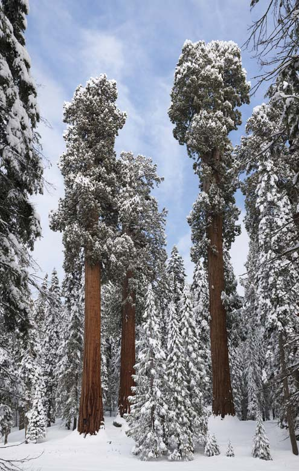
Estructura y transporte en el tallo 745
Los tallos de las eudicotiledóneas y monocotiledóneas herbáceas difi eren en estructura interna
Aunque en los tallos existe considerable variación estructural, todos poseen una cubierta protectora exterior (epidermis o peridermis), uno o más tipos de tejido fundamental y tejidos vasculares (xilema y fl oema). Considere primero la estructura de los tallos eudicotiledóneos herbáceos y luego los tallos monocotiledóneos.
Los haces vasculares de los tallos eudicotiledóneos herbáceos están ordenados en círculo en una sección transversal
Un tallo de girasol joven es un tallo eudicotiledóneo herbáceo representativo que muestra crecimiento primario ( FIGURA 35-1 ). Su cubierta exterior, la epidermis , brinda protección en los tallos herbáceos, como lo hace en las hojas y las raíces herbáceas (vea la tabla 33-4 y la fi gura 33-5). La cutícula , una capa cerosa de cutina , cubre la epidermis del tallo y reduce la pérdida de agua de la superfi cie del tallo. Las estomas permiten el intercambio de gases. (Recuerde del capítulo 34 que cutícula y estomas también están asociadas con la epidermis foliar). Dentro de la epidermis está el córtex , un cilindro de tejido fundamental que puede contener células de parénquima, colénquima y esclerénquima (vea la tabla 33-2 y la fi gura 33-3). Como podría esperarse a partir de los diversos tipos de células que contiene, el córtex en los tallos eudicotiledóneos herbáceos pueden tener varias funciones, como fotosíntesis, almacenamiento y sostén. Si un tallo es verde, la fotosíntesis ocurre en los cloroplastos de las células de parénquima cortical. El parénquima en el córtex también almacena almidón (en amiloplastos) y cristales (en vacuolas). Colénquima y esclerénquima en el córtex confi eren fortaleza y sostén estructural para el tallo. Los tejidos vasculares brindan conducción y sostén. En los tallos eudicotiledóneos herbáceos, los tejidos vasculares se ubican en haces que, cuando se ven en sección transversal, están ordenados en círculo. Sin embargo, vistos longitudinalmente, dichos haces se extienden como largas hebras a lo largo de un tallo y son continuos con los tejidos vasculares de raíces y hojas. Cada haz vascular contiene tanto xilema , que transporta agua y minerales disueltos desde las raíces hasta las hojas, como fl oema , que transporta azúcar disuelta (vea la tabla 33-3 y la fi gura 33-4). El xilema se ubica en el lado interno del haz vascular, y el fl oema se encuentra hacia el exterior. Entre el xilema y el fl oema de algunos tallos herbáceos se encuentra una capa sencilla de células llamada cámbium vascular , un meristema lateral responsable del crecimiento secundario (que se estudia más adelante). Dado que la mayoría de los tallos sostienen el cuerpo vegetal aéreo, son mucho más fuertes que las raíces. Las gruesas paredes de las traqueidas y los elementos de vaso en el xilema ayudan a dar sostén a la planta. En el xilema y el fl oema también se encuentran fi bras, aunque por lo general son más extensas en el fl oema. Dichas fi bras añaden fuerza considerable al tallo herbáceo. En los girasoles y algunos otros tallos eudicotiledóneos herbáceos, el fl oema contiene un grupo de fi bras hacia el exterior del haz vascular, llamado tapa fi brosa del fl oema , que ayuda a dar fuerza al tallo. La tapa fi brosa del fl oema no está presente en todos los tallos eudicotiledóneos herbáceos. La médula es un tejido fundamental en el centro del tallo eudicotiledóneo herbáceo que consiste en grandes células de parénquima con pared delgada que funcionan principalmente en almacenamiento. Debido a la distribución de los tejidos vasculares en haces, no hay una clara separación de córtex y médula entre los haces vasculares. Las áreas de
ción de las hojas sobre ellos permiten que cada hoja absorba luz para usarla en la fotosíntesis. Las estructuras reproductivas (como fl ores y frutos) se localizan en tallos en áreas accesibles a insectos, aves y corrientes de aire, que transfi eren polen de fl or a fl or y ayudan a dispersar semillas y frutos. Segundo: los tallos proporcionan transporte interno. Conducen agua y minerales disueltos (nutrientes inorgánicos) desde las raíces, donde dichos materiales se absorben del suelo, hacia las hojas y otras partes de la planta. Los tallos también conducen el azúcar producido en las hojas mediante fotosíntesis hacia las raíces y otras partes de la planta. Sin embargo, recuerde que los tallos no son los únicos órganos vegetales que conducen materiales. El sistema vascular es continuo a través de todas las partes de una planta, y la conducción ocurre en raíces, tallos, hojas y estructuras reproductoras. Tercero: los tallos producen nuevo tejido viviente. Siguen creciendo durante toda la vida de la planta y elaboran yemas que crecen hasta ser tallos con nuevas hojas y/o estructuras reproductoras. Además de las funciones de sostén, conducción y producción de nuevos tejidos de tallo, los tallos de algunas especies están modifi cadas para la reproducción asexual (vea el capítulo 37) o, si son verdes, para fabricar azúcar mediante fotosíntesis.
35.1 CRECIMIENTO Y ESTRUCTURA DEL TALLO
OBJETIVOS DE APRENDIZAJE
1 Identifi car las secciones transversales de tallos de eudicotiledóneas y monocotiledóneas herbáceas, y describir las funciones de cada tejido. 2 Mencionar los dos meristemas laterales y describir los tejidos que surgen de cada uno. 3 Destacar la transición desde el crecimiento primario hacia el crecimiento secundario en un tallo leñoso.
Usted recordará del capítulo 33 que las plantas tienen dos tipos diferentes de crecimiento. El crecimiento primario es un aumento en longitud de una planta y ocurre en meristemas apicales ubica dos en las puntas de las raíces y brotes y también dentro de las yemas de tallos. El crecimiento secundario es un aumento en la circunferencia (grosor) de una planta como resultado de la actividad de meristemas laterales ubicados dentro de tallos y raíces. Los nuevos tejidos formados por los meristemas laterales se llaman tejidos secundarios para distinguirlos de los tejidos primarios producidos por meristemas apicales. Todas las plantas tienen crecimiento primario; algunas tienen crecimiento tanto primario como secundario. Los tallos que sólo presentan crecimiento primario son herbáceos, mientras que aquellos que tienen crecimiento tanto primario como secundario son leñosos. (Ciertos tallos herbáceos, como los del geranio y el girasol, también tienen una cantidad limitada de crecimiento secundario). Una planta leñosa aumenta en longitud mediante crecimiento primario en las puntas de sus tallos y raíces, mientras que sus tallos y raíces más viejos más atrás de las puntas aumentan en circunferencia mediante crecimiento secundario. En otras palabras, al mismo tiempo que el crecimiento primario es aumento en la longitud del tallo, el crecimiento secundario es agregar madera y corteza, lo que por lo tanto produce el engrosamiento del tallo.
746 Capítulo 35
Las plantas leñosas tienen tallos con crecimiento secundario
Las plantas leñosas experimentan crecimiento secundario, un aumento en la circunferencia de tallos y raíces. El crecimiento secundario ocurre como resultado de la actividad de dos meristemas laterales: cámbium vascular y cámbium de corcho. Entre las plantas con fl ores, sólo las eudicotiledóneas leñosas (como manzano, nogal y arce) tienen crecimiento secundario. Las gimnospermas que tienen conos (como pino, junípero y pícea) también tienen crecimiento secundario. Las células en el cámbium vascular se dividen y producen dos tejidos conductores y de sostén: xilema secundario (madera) para sustituir el xilema primario y fl oema secundario (corteza interior) para sustituir el fl oema primario. Xilema y fl oema primarios no pueden transportar materiales indefi nidamente y por lo tanto se sustituyen en las plantas que tienen vidas prolongadas. Las células del meristema lateral exterior, llamado cámbium de corcho, se dividen y producen células de corcho y parénquima de corcho. El cámbium de corcho y los tejidos que produce se conocen de manera colectiva como peridermis (corteza exterior), que funciona como sustituto de la epidermis (vea la última MO en la tabla 33-4).
El cámbium vascular da lugar a xilema secundario y fl oema secundario
Los tejidos primarios en los tallos eudicotiledóneos leñosos están organizados como los de los tallos eudicotiledóneos herbáceos y el cámbium vascular, que es una delgada capa de células, está entre el xilema y
parénquima entre los haces vasculares con frecuencia se conocen como rayos medulares .
Los haces vasculares están dispersos a lo largo de los tallos monocotiledóneos
Una epidermis con su cutícula cerosa cubre los tallos monocotiledóneos, como el tallo herbáceo del maíz. Como en los tallos eudicotiledóneos herbáceos, los tejidos vasculares corren en hebras a lo largo del tallo. En sección transversal, los haces vasculares contienen xilema hacia el interior y fl oema hacia el exterior. Sin embargo, en contraste con las eudicotiledóneas herbáceas, los haces vasculares de las monocotiledóneas no están ordenados en círculo sino que están dispersos a lo largo del tallo ( FIGURA 35-2 ). Cada haz vascular está encerrado en una vaina de haz de células de esclerénquima de soporte. El tallo monocotiledóneo no tiene áreas distintivas de córtex y médula. El tejido fundamental en el que se incrustan los tejidos vasculares realiza las mismas funciones que el córtex y la médula en los tallos eudicotiledóneos herbáceos. Los tallos monocotiledóneos no poseen meristemas laterales (cámbium vascular y cámbium de corcho) que originen crecimiento secundario. Las monocotiledóneas sólo tienen crecimiento primario y no producen madera ni corcho. Aunque algunas monocotiledóneas con forma de árbol (como las palmeras) logran tamaño considerable, lo hacen mediante una forma modifi cada de crecimiento primario en el que las células parenquimatosas se dividen y alargan. Los tallos de algunas monocotiledóneas (como el bambú y la palmera) contienen gran cantidad de tejido de esclerénquima, lo que las hace duras y con forma leñosa en apariencia.
Sección transversal del tallo de un girasol ( Helianthus annuus ). Observe los haces vasculares ordenados en círculo alrededor de la parte central de la médula.
Acercamiento de un haz vascular. En cada haz, el xilema se ubica hacia el interior del tallo, y el floema hacia el exterior. Cada haz vascular está “cubierto” por un grupo de fibras para sostén adicional.
Haces vasculares
Médula
Córtex
Epidermis
Epidermis
Córtex
Tapa fibrosa del floema
Floema
Cámbium vascular
Xilema
Elemento de vaso
Médula
Haz vascular
500 μ m 250 μ m
Ed Reschke/Peter Arnold, Inc.
E d
R
e s
c h
k e
/ P
e t
e r
A r
n o
l d
, I
n c
.
FIGURA 35-1 Animada MO de un tallo eudicotiledóneo herbáceo
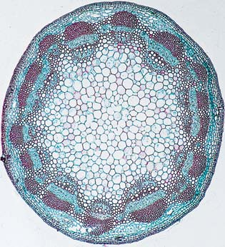
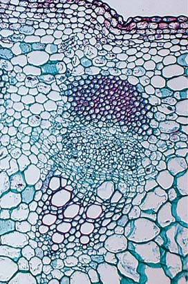
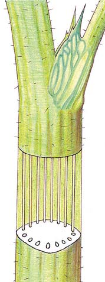
Estructura y transporte en el tallo 747
bium vascular, en ángulo recto con su dirección normal de división. En este caso, ambas células hijas son meristemáticas. ¿Qué ocurre con los tejidos primarios originales de un tallo una vez que se desarrolla crecimiento secundario? Conforme un tallo aumenta en grosor, cambia la orientación de los tejidos primarios originales. Por ejemplo, xilema secundario y fl oema secundario se colocan entre el xilema primario y el fl oema primario dentro de cada haz vascular. Por lo tanto, a medida que el cámbium vascular forma tejidos secundarios, el xilema primario y el fl oema primario en cada haz vascular se separan uno de otro. Los tejidos primarios ubicados afuera del cilindro de crecimiento secundario (esto es: fl oema primario, córtex y epidermis) están sujetos a las presiones mecánicas producidas por el crecimiento secundario y gradualmente se comprimen o destrozan y se desprenden. Los tejidos secundarios sustituyen los tejidos primarios en función. El xilema secundario conduce agua y minerales disueltos desde las raíces hasta las hojas en la planta leñosa. Contiene los mismos tipos de células que se encuentran en el xilema primario: traqueidas conductoras de agua y elementos de vaso, además de células de parénquima de xilema y fi bras. El acomodo de los diferentes tipos de células en el xilema secundario produce las características distintivas de la madera de cada especie. El fl oema secundario conduce azúcar disuelta desde su lugar de fabricación o de descomposición de almidón hasta un lugar de uso y almacenamiento. Los mismos tipos de células que se encuentran en el fl oema primario (elementos de tubo criboso, células oclusivas, células parenqui-
el fl oema en los haces vasculares. Una vez que comienza el crecimiento secundario, la estructura interna de un tallo cambia de manera considerable ( FIGURA 35-3 ). Aunque el cámbium vascular inicialmente no es un cilindro continuo de células (porque los haces vasculares están separados mediante rayos medulares), se vuelve continuo cuando empieza la producción de tejidos secundarios. Esta continuidad se desarrolla porque ciertas células de parénquima en cada rayo medular conservan la capacidad de dividirse. Dichas células se conectan a células de cámbium vascular en cada haz vascular y forman un anillo completo de cámbium vascular. Las células en el cámbium vascular se dividen y producen células hijas en dos direcciones. Las células formadas a partir del cámbium vascu lar que se divide se ubican o en el interior del anillo de cámbium vascu lar (para convertirse en xilema secundario, o madera) o afuera de él (para convertirse en fl oema secundario, o corteza interior) ( FIGURA 35-4 ). Cuando una célula en el cámbium vascular se divide tangencialmente (hacia adentro o hacia afuera), una célula hija sigue siendo meristemática; esto es: sigue siendo parte del cámbium vascular. La otra célula puede dividirse nuevamente varias veces, pero con el tiempo deja de dividirse y se desarrolla hasta ser tejido secundario maduro. Por ende, el cámbium vascular es una delgada capa de células entre la madera y la corteza interior, los dos tejidos que él produce ( FIGURA 35-5 ). Conforme el tallo aumenta en circunferencia, también se incrementa el número de células en el cámbium vascular. Este aumento en células ocurre por una división radial ocasional de una célula de cám-
FIGURA 35-2 Animada MO de un tallo de monocotiledónea
- Sección transversal de un tallo de maíz ( Zea mays ) que muestra haces vasculares dispersos a lo largo del tejido fundamental.
Haces vasculares
Tejido fundamental
Epidermis
Floema
Xilema
Espacio de aire
Vaina de haz (rodea el haz vascular)
Célula oclusiva (acompañante)
Elemento de tubo criboso
Elemento de vaso
100 μ m
- Acercamiento de un haz vascular. El espacio de aire es el sitio donde se formaron los primeros elementos de xilema y más tarde se desintegraron. Todo el haz está encerrado en una vaina de haz de esclerénquima para sostén adicional.
500 μ m
Ed Reschke/Peter Arnold, Inc.
Ed Reschke
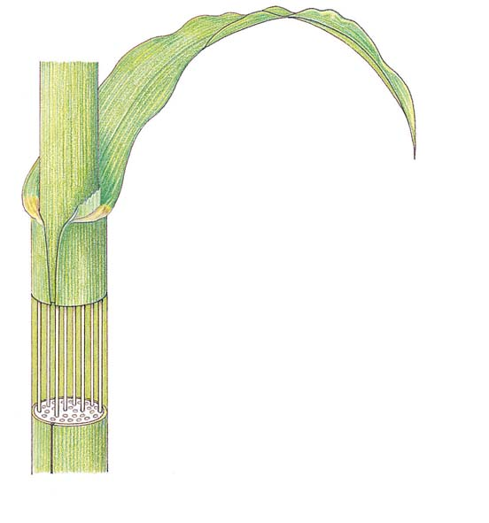
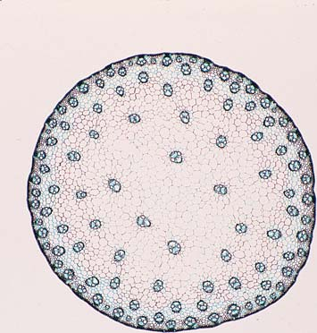
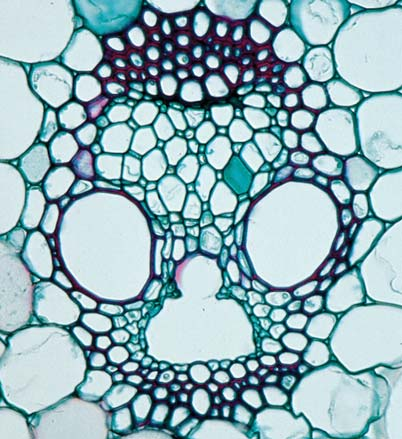
748 Capítulo 35
fi gura 35-5). El cámbium vascular forma rayos, que con frecuencia son continuos desde el xilema secundario hacia el fl oema secundario. El agua y los minerales disueltos se transportan lateralmente a través de rayos, desde el xilema secundario hacia el fl oema secundario. Del mismo modo, los rayos forman vías para el transporte lateral de azúcar disuelta, desde el fl oema secundario hacia el xilema secundario, y de productos de desecho hacia el centro, o corazón, del árbol (que se estudia más adelante).
matosas de fl oema y fi bras) también se ubican en el fl oema secundario, aunque éste por lo general tiene más fi bras que el fl oema primario. Xilema y fl oema secundarios transportan agua, minerales y azúcar de manera vertical a todo el cuerpo vegetal leñoso. Sin embargo, los materiales también deben moverse en forma horizontal (lateralmente). El movimiento lateral ocurre a través de rayos , que son cadenas de células de parénquima que radian desde el centro del tallo o raíz leñosos (vea la
Los tallos de muchas plantas experimentan crecimiento secundario para aumentar en circunferencia.
Floema primario
Xilema primario Epidermis
Córtex
Cámbium vascular
Médula
Restos de floema primario
Restos de córtex Restos de epidermis
Floema secundario (corteza interior)
Floema secundario (corteza interior)
Xilema secundario (madera)
Peridermis (corteza exterior)
Restos de xilema primario Restos de médula Cámbium vascular
Cámbium vascular Restos de xilema primario Restos de médula
Xilema secundario (madera) Peridermis (corteza exterior; los restos de floema primario, córtex y epidermis gradualmente se comprimen o destrozan y desprenden)
En el inicio del crecimiento secundario, el cámbium vascular surge en el parénquima entre los haces vasculares (esto es: en los rayos medulares) y forma un cilindro de tejido meristemático ( círculo azul en sección transversal ).
1
El cámbium vascular comienza a dividirse y forma xilema secundario en el interior y floema secundario en el exterior. 2
Tallo leñoso joven. El cámbium vascular produce significativamente más xilema secundario que floema secundario. 3
FIGURA 35-3 Desarrollo de crecimiento secundario El cámbium vascular y los tejidos que produce se muestran en sección transversal; el cámbium de corcho no se muestra. (Las fi guras cambian en escala debido a limitaciones de espacio; en realidad, en los tres diagramas, médula y xilema primario tienen el mismo tamaño, pero el cambio en escalas hace que dichos tejidos parezcan encogerse en cada diagrama sucesivo).
PUNTO CLAVE
Estructura y transporte en el tallo 749
Tiempo
Célula de cámbium vascular
Xilema secundario Floema secundario
Segunda división de cámbium vascular forma una célula de floema.
División de cámbium vascular forma dos células, una célula de xilema y una célula de cámbium vascular.
Célula de cámbium vascular cuando comienza crecimiento secundario.
X 1 X 2 P 1 P 2
P 1 P 2
P 1
P 1
P 1
P 2
X 3
X 1 X 2
X 1 X 2
X 1
X 1
X 1
X 2
X 3
X 4
FIGURA 35-4 Animada Divisiones de una célula de cámbium vascular durante una sola temporada de crecimiento Para estudiar la fi gura, comience en la parte inferior y avance hacia arriba. Observe que el cámbium vascular ( la célula azul ) se divide en dos direcciones y forma xilema secundario (X) hacia el interior y fl oema secundario (P) hacia el exterior. Dichas células, que están numeradas en el orden en el que se producen, se diferencian en tipos de células maduros asociados con xilema y fl oema. Conforme se acumula xilema secundario, el cámbium vascular se “mueve” hacia afuera y el tallo leñoso aumenta en diámetro.
▲
Garry DeLong/Photo Researchers, Inc.
100 μ m
Peridermis y restos de tejidos primarios
Cámbium vascular
Restos de tejidos primarios
Xilema secundario (crecimiento de 3 años)
Rayo
Madera de verano
Madera de primavera
Floema secundario
FIGURA 35-5 MO de una porción de tallo de tilo americano ( Tilia americana ) de tres años de edad, en sección transversal.
▲
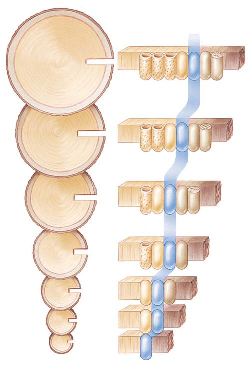
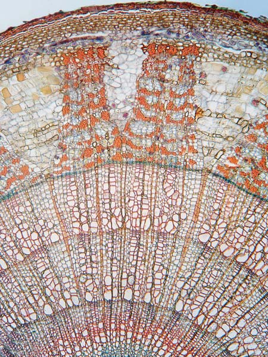
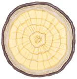
750 Capítulo 35
tencia. Cuando la yema reanuda su crecimiento, las escamas de yema que cubren la yema terminal se desprenden, lo que deja cicatrices de escama de yema sobre el tallo donde estaban unidas. Puesto que las plantas leñosas de zona templada forman yemas terminales al fi nal de la temporada de crecimiento de cada año, el número de conjuntos de cicatrices de escamas de yema sobre un vástago indica su edad. Una cicatriz de hoja muestra dónde estaba unida cada hoja sobre el tallo; el patrón de cicatrices de hoja puede usarse para determinar la distribución de las hojas sobre un tallo: alternado, opuesto o en espiral (vea la fi gura 34-2b). El tejido vascular (conductor) que se extiende desde el tallo hacia la hoja forma cicatrices de haz dentro de una cicatriz de hoja. Las yemas axilares pueden encontrarse arriba de las cicatrices de hojas. Además, la corteza de un vástago leñoso tiene lenticelas, que parecen pequeñas motas sobre la corteza de un vástago.
Los términos comunes asociados con la madera se basan en la estructura vegetal
Si usted alguna vez examinó diferentes tipos de madera, pudo observar que algunos árboles tienen madera con dos colores diferentes ( FIGU-
RA 35-8 ). El xilema secundario funcional, la parte que conduce agua y minerales disueltos, es la albura , una delgada capa de madera más joven y con color más claro que está más cerca de la corteza. El duramen , la madera más vieja en el centro del árbol, usualmente es de un rojo pardusco. Un examen microscópico del duramen revela que sus vasos y traqueidas están taponados con pigmentos, taninos, gomas, resinas y otros materiales, por lo tanto, el duramen ya no funciona en la conducción sino que, en vez de ello, lo hace como sitio de almacenamiento para productos de desecho. Puesto que es más denso que la albura, el duramen proporciona soporte estructural a los árboles. Cierta evidencia sugiere que el duramen también es más resistente al decaimiento. Casi todo el mundo ha escuchado acerca de la madera dura y la madera blanda. En términos botánicos, la madera dura es la madera de las plantas con fl ores y la madera blanda es la madera de las coníferas
El cámbium de corcho produce peridermis
El cámbium de corcho, que por lo general surge a partir de células de parénquima en el córtex exterior, produce peridermis , el reemplazo funcional de la epidermis. El cámbium de corcho es o un cilindro continuo de células en división (similar al cámbium vascular) o una serie de arcos de células meristemáticas que se traslapan y se forman a partir de células parenquimatosas en capas sucesivamente más profundas del córtex y, a la larga, fl oema secundario. La variación en cámbium de corcho y sus tasas de división explican por qué la corteza exterior de algunas especies de árboles está fi surada (como en el roble bur), rugosa y lanuda (jicoria ovada), escamosa (pino de Noruega), o lisa y desconchada (abedul papirífero). Como es cierto para el cámbium vascular, el cámbium de corcho se divide para formar nuevos tejidos en dos direcciones: hacia su interior y hacia su exterior. Las células de corcho, formadas hacia el exterior del cámbium de corcho, mueren en la madurez y tienen paredes que contienen capas de suberina y ceras, lo que las hace impermeables. Estas células de corcho protegen el tallo leñoso contra lesiones mecánicas, incendios leves, ataques de insectos y hongos, temperaturas extremas y pérdida de agua. Hacia su interior, el cámbium de corcho en ocasiones forma células parenquimatosas de corcho que almacenan agua y gránulos de almidón. El parénquima de corcho tiene un grosor de una a varias células, mucho más delgada que la capa de células de corcho. Las células de corcho son impermeables al agua y los gases, aunque las células internas vivas del tallo leñoso requieren oxígeno y deben intercambiar gases con la atmósfera circundante. Conforme un tallo engruesa a partir del crecimiento secundario, muere la epidermis, que incluye estomas que intercambian gases para el tallo herbáceo. Las estomas se sustituyen por lenticelas , que permiten el intercambio de gases a través de la peridermis ( FIGURA 35-6 ).
Las ramas leñosas de los árboles deciduos tienen rasgos característicos en invierno
Un vástago leñoso es aquella parte de una rama producida durante la real temporada de crecimiento. Los vástagos tienen yemas , que son brotes embrionarios. Una yema terminal es el brote embrionario ubicado en la punta de un tallo. El meristema apical latente (que no crece de manera activa) de una yema terminal está cubierto y protegido por una capa exterior de escamas de yema , que son hojas modifi cadas (vea la fi gura 34-14C). Las yemas axilares , también llamadas yemas laterales , se ubican en las axilas de las hojas de una planta (vea la fi gura 34-1). Una axila es el ángulo superior entre una hoja y el tallo al que está unida. Cuando crecen las yemas terminal y axilar, forman ramas que tienen hojas y/o fl ores. El área sobre un tallo donde se une cada hoja se llama nodo , y la región entre dos nodos sucesivos es un internodo . Para demostrar ciertas características estructurales del tallo, es posible usar una rama leñosa de un árbol deciduo que haya perdido sus hojas, como se muestra en la FIGURA 35-7 . Las escamas de yema cubren la yema terminal y protegen su delicado meristema apical durante la la-
Lenticela
Células de corcho
Cámbium de corcho y parénquima de corcho 200 μ m
James Mauseth, University of Texas
FIGURA 35-6 MO de peridermis de tallo, que muestra una lenticela La epidermis está rota debido a la proliferación de células de corcho distribuidas holgadamente en la lenticela. Tomada del corcho del tallo de aristoloquia ( Aristolochia elegans ).
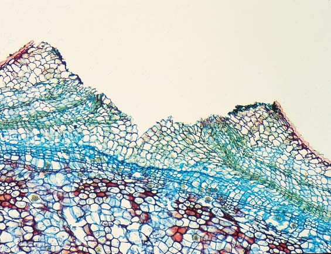
Estructura y transporte en el tallo 751
apariencia de un anillo en sección transversal se debe a diferencias en tamaño celular y grosor de pared celular entre el xilema secundario formado al fi nal del crecimiento del año anterior y el que se formó al comienzo del crecimiento del año siguiente. En la primavera, cuando el agua es abundante, la madera formada por el cámbium vascular tiene células conductoras (traqueidas y elementos de vaso) de gran diámetro y pocas fi bras y se le llama adecuadamente madera de primavera o madera temprana (vea la fi gura 35-5). Conforme avanza el verano y el agua es menos abundante, la madera formada, conocida como madera de verano o madera tardía , tiene células conductoras más estrechas y muchas fi bras. Es esta diferencia en tamaño celular entre la madera de verano de un año y la madera de primavera del año siguiente la que da la apariencia de anillos.
El análisis de los anillos de un árbol brinda útil información científi ca
En los climas templados, el número de anillos anuales indica la edad de un árbol. El tamaño de cada anillo varía dependiendo de condiciones climatológicas locales. En ocasiones la variación puede atribuirse a un solo factor ambiental, y patrones similares aparecen en los anillos de diferentes especies a lo largo de grandes áreas geográfi cas. Por ejemplo, años con precipitación adecuada producen anillos de crecimiento más anchos, y años de sequía producen anillos más estrechos. Es posible estudiar secuencias de anillo que tengan muchos miles de años de antigüedad al construir una cronología maestra , una muestra completa de anillos que se remonten lo más lejos posible ( FIGURA 35-9 ). La dendrocronología , el estudio de los detalles visibles y microscópicos de los anillos de árbol, se usa ampliamente en muchos campos. El análisis de anillos de árbol ayudó a datar sitios prehistóricos nativoamericanos en el suroeste. Por ejemplo, al usar análisis de anillos de árbol, científi cos determinaron que Cliff Palace en el parque nacional Mesa Verde databa del año 1073. El análisis de anillos de árbol también es útil en ecología (para estudiar cambios en una comunidad boscosa a través del tiempo), ciencias ambientales (para estudiar los efectos de la contaminación del aire sobre el crecimiento arbóreo) y geología (para datar terremotos y erupciones volcánicas).
(gimnospermas que tienen conos). La madera del pino y de otras coníferas por lo general carece de fi bras (con sus gruesas paredes celulares secundarias) y elementos de vaso; las células conductoras en las gimnospermas son las traqueidas. Estas diferencias celulares por lo general hacen que la madera de las coníferas sea más blanda que la madera de las plantas con fl ores, aunque existe una variación sustancial de una especie a otra. El árbol balsa, por ejemplo, es una planta con fl ores cuya madera blanda extremadamente ligera se usa para elaborar modelos de aviones. Las plantas leñosas que crecen en climas templados donde hay un período de crecimiento (durante primavera y verano) y un período de latencia (durante invierno) muestran anillos anuales , círculos concéntricos que se encuentran en secciones transversales de la madera. Para determinar la edad de un tallo leñoso en la zona templada, simplemente cuente los anillos anuales. En los trópicos, condiciones ambientales, en particular los patrones de precipitación estacionales o de todo el año, determinan la presencia o ausencia de anillos, de modo que los anillos no son un método confi able para determinar la edad de la mayoría de los árboles tropicales. El examen de los anillos anuales con una lupa no revela “anillos”, o líneas, reales que separen el crecimiento de un año del siguiente. La
Escama de yema
Crecimiento de un año
Cicatrices de escama de yema terminal
Yema terminal
Yema axilar
Cicatriz de hoja
Lenticela
Cicatrices de escama de yema terminal
Cicatrices de haz
Nodo
Nodo
Internodo
FIGURA 35-7 Animada Estructura externa de una rama leñosa en su condición invernal La edad de una rama leñosa puede determinarse por el número de conjuntos de cicatrices de escama de yema (no se cuentan las ramas laterales). ¿Cuál es la edad de esta rama? ¿Puede señalar algún vástago?
Albura
Duramen
Carlyn Iverson
FIGURA 35-8 Duramen y albura La madera de los árboles más viejos consiste en un denso duramen central y una capa exterior de albura. La albura es el xilema funcional que conduce agua y minerales disueltos. Los anillos anuales en el duramen son muy notorios.
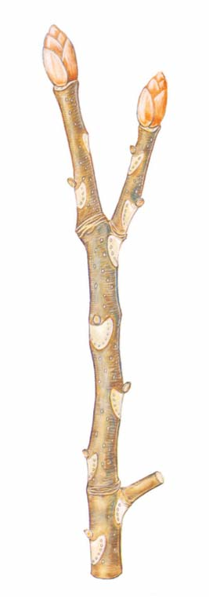
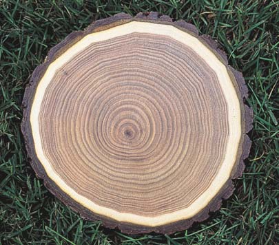
752 Capítulo 35
a determinar el patrón natural de fl uctuaciones de temperatura globales. Esta información es particularmente importante debido a preocupaciones acerca de la infl uencia humana sobre el clima global. Aunque los científi cos generalmente están de acuerdo en que la Tierra se calentó en años recientes, no están seguros de cuánto del calentamiento reciente es el resultado de la infl uencia humana en lugar de
Los climatólogos usan cada vez más la datación con anillos de árbol para estudiar patrones climatológicos pasados. Los anillos anuales de ciertas especies de árboles que crecen a grandes elevaciones son sensibles a variaciones de temperatura anuales; los anillos de estos árboles son más anchos en años cálidos y más estrechos en años fríos. El estudio de los anillos de árbol a través de largos períodos ayuda a los investigadores
MÉTODO DE INVESTIGACIÓN
Al relacionar los anillos de una muestra de madera de edad desconocida con la cronología maestra, los investigadores pueden determinar con precisión la edad de la muestra. El análisis de anillos de árbol brinda información útil en varios campos, como en la datación de sitios prehistóricos, para estudiar patrones climatológicos del pasado, y para datar grandes terremotos prehistóricos.
1918 1920
El anillo más externo es el año cuando se cortó el árbol.
Parear y traslapar secciones de madera cada vez más antiguas extiende las fechas hacia atrás en el tiempo.
Médula Anillos anuales Corteza exterior Cámbium vascular
1950 1940
1940
1932
1932 1926 1931
1926 1931
Largo y delgado núcleo de madera extraído con una herramienta de perforación
Muestra de un árbol vivo
Muestra de un árbol muerto en el mismo bosque
Muestra de un edificio antiguo en la misma área que el bosque
Anillos anuales
Corteza
Tilia (tilo americano)
1
2
3
Con piezas de madera progresivamente más antiguas de la misma área geográfi ca se elabora una cronología maestra. Un pequeño núcleo de madera se extrae del tronco de un árbol vivo. Los anillos más antiguos (hacia el centro del árbol) se parean con los anillos más jóvenes (hacia el exterior) de un árbol más viejo, acaso uno muerto en el bosque. La cronología maestra se remonta hacia atrás en el tiempo al traslapar secuencias de anillos coincidentes de secciones de madera cada vez más vieja, incluso la que se encuentra en viviendas prehistóricas. En la actualidad, la cronología maestra más larga, de pinos de Colorado en el occidente de Estados Unidos, se remonta a casi 9000 años. El pareado de anillos, alguna vez una tarea tediosa y laboriosa, se realiza actualmente con computadoras.
FIGURA 35-9 Cómo se analizan los anillos de árbol
¿Por qué se utiliza?
¿Cómo se hace esto?
Estructura y transporte en el tallo 753
estas células huecas muertas desde la raíz hacia el tallo hasta la hoja. Los minerales disueltos se transportan de manera pasiva en el agua. La planta no gasta energía propia para transportar agua, que se mueve como resultado de procesos físicos naturales. El transporte de savia en el xilema es el más rápido de cualquier movimiento de materiales en las plantas ( TABLA 35-1 ).
Las raíces obtienen agua y minerales disueltos del suelo.
La mayor parte del agua que una planta absorbe se transpira a través de estomas hacia la atmósfera.
Moléculas de azúcar fabricadas en las hojas mediante fotosíntesis se transportan en savia del floema a través de la planta, incluidas las raíces.
Una vez dentro de las raíces, el agua y los minerales se transportan hacia arriba en el xilema hacia tallos, hojas, flores, frutos y semillas.
FIGURA 35-10 Animada Vista general del transporte en plantas vasculares El transporte en el xilema se explica en el lado derecho de la fi gura (comience en el fondo y avance hacia arriba), mientras que el transporte en el fl oema está en el lado izquierdo.
Tasas de transporte en xilema y fl oema para plantas seleccionadas
Tasa máxima Tasa máxima en xilema en fl oema Planta (cm/min) (cm/min)
Conífera 2 0.8
Eudicotiledónea leñosa 73 2
Eudicotiledónea o monocotiledónea 100 2.8–11 herbácea
Enredadera herbácea 250 1.2
Fuente: Adaptado de Mauseth, J. D., Botany: An Introduction to Plant Biology, 2a. ed. Saunders College Publishing, Philadelphia, 1995.
Nota: Las tasas de xilema y fl oema son de diferentes plantas dentro de cada grupo general y sólo deben usarse con propósitos comparativos.
TABLA 35-1
la variabilidad climática natural. Para ayudar a responder esta pregunta vital, científi cos europeos elaboran en la actualidad una cronología maestra de 10,000 años que ayudará a reconstruir temperaturas anuales a través de Europa y Asia del norte desde el fi nal de la última glaciación.
Repaso
■ En sección transversal, ¿cómo difi ere la distribución del tejido vascular en los tallos eudicotiledóneos y los tallos monocotiledóneos primarios?
■ ¿Cuál es la diferencia entre cámbium vascular y cámbium de corcho? ¿Qué tejidos surgen del cámbium vascular? ¿Del cámbium de corcho?
■ ¿Qué ocurre con los tejidos primarios de un tallo cuando ocurre crecimiento secundario?
■ ¿Cómo se forman los anillos de crecimiento en los tallos leñosos?
■ ¿Cuál es la diferencia entre yemas terminales y axilares?
35.2 TRANSPORTE DE AGUA
■ ■ OBJETIVOS DE APRENDIZAJE
4 Describir la ruta de movimiento de agua en las plantas. 5 Defi nir potencial hídrico . 6 Explicar los papeles de tensión-cohesión y de presión radical como mecanismos responsables para el ascenso de agua y minerales disueltos en el xilema.
Ahora que estudió la estructura del tallo y los crecimientos primario y secundario, examinará el transporte interno en el sistema vascular de la planta ( FIGURA 35-10 ). Las raíces obtienen agua y minerales disueltos del suelo. Una vez dentro de las raíces, dichos materiales se transportan hacia arriba a los tallos, hojas, fl ores, frutos y semillas. Más aún: moléculas de azúcar se transportan desde su lugar de fabricación o de descomposición de almidón a lo largo del cuerpo de la planta, incluso hacia las raíces subterráneas. Agua y minerales disueltos se transportan desde las raíces hacia otras partes de la planta en el xilema, mientras que el azúcar disuelto se transloca en el fl oema. El transporte en xilema y la translocación en fl oema no se parecen al movimiento de materiales en los animales porque en las plantas nada circula en un sistema de vasos. Agua y minerales, transportados en el xilema, viajan solamente en una dirección (hacia arriba), mientras que la translocación del azúcar disuelto puede ocurrir hacia arriba o hacia abajo en células de fl oema separadas. Además, el transporte en el xilema y la translocación en el fl oema difi eren de la circulación interna en los animales porque el movimiento tanto en xilema como en fl oema es impulsado por procesos físicos naturales más que por un órgano de bombeo, o corazón. ¿Cómo viajan los materiales en el sistema continuo de tejidos vasculares de la planta? Primero examinará el agua y su movimiento a través de la planta, y más tarde estudiará la translocación del azúcar disuelto.
En el xilema se transportan agua y minerales
El agua inicialmente se mueve de manera horizontal hacia las raíces desde el suelo, y pasa a través de varios tejidos hasta que llega al xilema. Una vez que el agua se mueve hacia las traqueidas y elementos de vaso del xilema radicular, viaja hacia arriba a través de una red continua de
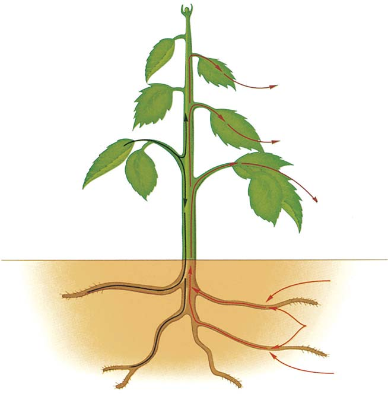
754 Capítulo 35
potencial hídrico de la raíz es más negativo que el potencial hídrico del suelo. En consecuencia, el agua se mueve por ósmosis desde el suelo hacia la raíz.
De acuerdo con el modelo tensión-cohesión, el agua es jalada arriba de un tallo
En 1896, el botánico irlandés Henry Dixon propuso el modelo tensióncohesión para explicar el ascenso del agua contra la fuerza de gravedad. Aunque inicialmente se topó con demasiado escepticismo en la comunidad científi ca, este modelo soportó la prueba del tiempo. De acuerdo con el modelo tensión-cohesión , también conocido como el modelo transpiración-cohesión , el agua es jalada arriba de la planta como resultado de una tensión producida en la parte superior de la planta ( FIGURA
35-11 ). Esta tensión, que parece a la producida cuando se bebe un líquido a través de una pajilla (popote), es causada por el tirón evaporador de la transpiración. Recuerde del capítulo 34 que la transpiración es la evaporación de vapor de agua de las plantas. La mayor parte del agua perdida por la transpiración tiene lugar a través de estomas, los numerosos poros microscópicos presentes en las superfi cies de hojas y tallos. El vapor de agua se difunde a través de las estomas hacia una capa fr ontera de aire quieto adyacente a la superfi cie foliar. La capa de frontera es más gruesa cuando el viento está tranquilo que cuando viene en ráfagas; una capa frontera más gruesa resulta en una tasa más lenta de transpiración. La tensión se extiende desde las hojas, donde ocurre la mayor parte de la transpiración, baja los tallos y se dirige hacia las raíces. Lleva agua arriba por el xilema del tallo hacia las células de las hojas que perdieron agua como resultado de la transpiración y tira del agua desde el xilema de la raíz hacia el xilema del tallo. Conforme el agua se lleva hacia arriba, agua adicional del suelo se extrae hacia las raíces. En consecuencia, la ruta del movimiento del agua es la siguiente:
suelo ¡ tejidos radicales (epidermis, córtex, etcétera) ¡ xilema
radicular ¡ xilema de tallo ¡ xilema foliar ¡ mesófi lo
foliar ¡ atmósfera
Este tirón hacia arriba del agua es posible sólo en tanto haya una columna no rota de agua en el xilema a lo largo de toda la planta. El agua forma una columna sin interrupciones en el xilema debido a la cohesión de las moléculas de agua. Recuerde del capítulo 2 que las moléculas de agua son cohesivas , esto es: se atraen fuertemente unas a otras, debido a los enlaces hidrógeno . Además, la adhesión del agua a las paredes de las células de xilema, también resultado de los enlaces hidrógeno, es un importante factor en el mantenimiento de una columna ininterrumpida de agua. Por lo tanto, las propiedades cohesiva y adhesiva del agua le permiten formar una columna continua que puede ser tirada a través del xilema. El movimiento de agua en el xilema mediante el mecanismo tensióncohesión puede explicarse en términos de potencial hídrico. La atmósfera tiene un potencial hídrico extremadamente negativo. Por ejemplo, aire con una humedad relativa de 50% tiene un potencial hídrico de −100 MPa; incluso el aire húmedo a una humedad relativa de 90% tiene un potencial hídrico negativo de −13 MPa. En consecuencia, existe un gradiente de potencial hídrico desde lo menos negativo (el suelo) hacia arriba a través de la planta hasta lo más negativo (la atmósfera). Este gradiente literalmente tira del agua desde el suelo hacia arriba a través de la planta. Aunque el modelo tensión-cohesión se propuso por primera vez hacia fi nales del siglo xix, evidencia experimental concluyente para apoyar este mecanismo no se obtuvo sino hasta fi nales de la década de 1990 y
¿Cómo se mueve el agua hacia la parte superior de la planta? O se empuja desde el fondo de la planta o se jala desde la parte superior de la planta. Aunque las plantas usan ambos mecanismos, la evidencia actual indica que la mayor parte del agua se transporta a través de xilema al jalarse hacia la parte superior de la planta.
El movimiento del agua puede explicarse mediante una diferencia en el potencial hídrico
Para entender cómo se mueve el agua, es útil introducir el potencial hídrico , que se defi ne como la energía libre del agua (vea el capítulo 7). El potencial hídrico ( C w ), representado por la letra griega psi mayúscula, es importante en la fi siología vegetal porque es una medida de la capacidad de una célula para absorber agua mediante ósmosis. (Recuerde del capítulo 5 y de la fi gura 5-12 que ósmosis es un tipo especial de difusión que involucra el movimiento neto de agua a través de una membrana selectivamente permeable desde una región de mayor concentración hacia una región de menor concentración). El potencial hídrico ofrece una medida de la tendencia del agua a evaporarse de las células. El potencial hídrico del agua pura por convención se establece en 0 megapascales (MPa) porque no puede medirse en forma directa. (Un megapascal es una unidad de presión igual a aproximadamente 10.2 kg/ cm 2 .) Sin embargo, los botánicos pueden medir diferencias en la energía libre de las moléculas de agua en distintas situaciones. Cuando los solutos se disuelven en agua, la energía libre del agua disminuye. Los solutos inducen hidratación , en la que las moléculas de agua rodean iones y moléculas polares, y las mantienen en disolución al evitar que se junten (vea la fi gura 2-10). La asociación de moléculas de agua con las moléculas hidratadas y los iones reduce el movimiento de las moléculas de agua, lo que reduce su energía libre. Por ende, los solutos disueltos bajan el potencial hídrico a un número negativo. El agua se mueve desde una región de mayor potencial hídrico (menos negativo) a una región de menor potencial hídrico (más negativo). El potencial hídrico del suelo varía, dependiendo de cuánta agua contiene. Cuando un suelo es extremadamente seco, su potencial hídrico es muy bajo (muy negativo). Cuando un suelo es más húmedo, su potencial hídrico es mayor, aunque todavía tiene un valor negativo porque minerales disueltos están presentes en concentraciones diluidas ( TABLA 35-2 ). El potencial hídrico en las células radicales también es negativo debido a la presencia de solutos disueltos. Las raíces contienen más materiales disueltos que el agua del suelo, a menos que el suelo sea extremadamente seco. Esto signifi ca que, bajo condiciones normales, el
Valores de potencial hídrico ( C w ) representativos*
Partes vegetales y el Potenciales hídricos en ambiente circundante megapascales (MPa)
Atmósfera cerca de hojas − 80.0
Interior de la hoja − 1.5
Xilema de tallo − 0.7
Interior de la raíz − 0.4
Agua del suelo − 0.1
*Los valores reales varían enormemente, dependiendo de factores ambientales como concentración de soluto, presión hidrostática y gravedad.
TABLA 35-2
Estructura y transporte en el tallo 755
¿El modelo tensión-cohesión es sufi cientemente poderoso para explicar la subida de agua en las plantas más altas? Los biólogos vegetales estudiaron esta cuestión durante años. Por ejemplo, un estudio de 2004 de cinco de los ocho árboles más altos en el mundo (todos secuoyas, o Sequoia sempervirens ) concluyó que la tensión producida por transpira-
principios de 2000. En aquella época, muchos grupos de investigación realizaron mediciones directas de la gran presión negativa que existe en el xilema, lo que indica que los gradientes de potencial hídrico en los xilemas de raíz, tallo y foliar son adecuados para explicar el movimiento de agua observado.
La transpiración es la fuerza impulsora del modelo tensión-cohesión.
Esto, a su vez, jala agua hacia el xilema radicular, y forma una columna continua de agua desde el xilema radicular hacia el xilema del tallo hasta el xilema foliar. El movimiento del agua hacia arriba en la raíz produce un tirón que hace que el agua del suelo se difunda hacia la raíz.
El vapor de agua se transpira desde la superficie de las células de mesófilo foliar hacia la atmósfera más seca a través de estomas. Esto produce una tensión que tira del agua desde el xilema foliar hacia las células de mesófilo.
Pelo radical
Agua del suelo
Xilema radicular
Estoma
Moléculas de agua
Células de mesófilo Xilema foliar
Xilema de tallo
La cohesión de las moléculas de agua, causada por enlaces hidrógeno, permite que columnas ininterrumpidas de agua sean tiradas hacia arriba por vasos estrechos y traqueidas del xilema del tallo.
1
2
3
FIGURA 35-11 Animada El modelo tensión-cohesión
PUNTO CLAVE
756 Capítulo 35
santes de enfermedades vegetales se transportan a través de la planta en el fl oema. La translocación de savia no es tan rápida como el transporte en xilema (vea la tabla 35-1). El fl uido dentro del tejido de fl oema se mueve tanto hacia arriba como hacia abajo. La sacarosa se transloca en tubos cribosos individuales desde una fuente , un área de suministro excesivo de azúcar (por lo general una hoja), hasta un depósito , un área de almacenamiento (como almidón insoluble) o de uso de azúcar, como raíces, meristemas apicales, frutos y semillas.
El modelo presión-fl ujo explica la translocación en fl oema
Evidencia experimental actual apoya la translocación del azúcar disuelto en fl oema mediante el modelo presión-fl ujo , que fue propuesto por primera vez en 1926 por el científi co alemán Ernst Münch. El modelo presión-fl ujo afi rma que los solutos (como los azúcares disueltos) se mueven en el fl oema mediante un gradiente de presión; esto es: una diferencia en presión. El gradiente de presión existe entre la fuente, donde el azúcar se carga en el fl oema, y el depósito, donde el azúcar se remueve del fl oema. En la fuente, la sacarosa disuelta se mueve desde las células de mesófi lo de una hoja, donde se fabricó, hacia las células oclusivas, que cargan sacarosa en los elementos de tubo criboso del fl oema. La carga de sacarosa ocurre mediante transporte activo, un proceso que requiere trifosfato de adenosina (ATP) ( FIGURA 35-12 ). El ATP suministra energía para bombear protones (H + ) fuera de los elementos de tubo criboso, lo que produce un gradiente de protones que impulsa la toma de azúcar a través de canales específi cos mediante el cotransporte de protones de vuelta en los elementos de tubo criboso. (Recuerde la discusión de un sistema de cotransporte en el capítulo 5). En el sistema de cotransporte involucrado en la carga de fl oema, el azúcar se mueve desde una región de baja concentración hacia una región de alta concentración al acoplar su transporte con el transporte de protones sobre su gradiente de concentración. En consecuencia, el azúcar se acumula en el elemento de tubo criboso. El aumento en azúcares disueltos en el elemento de tubo criboso en la fuente, una concentración que es dos a tres veces mayor que en las células circundantes, disminuye (hace más negativo) el potencial hídrico de dicha célula. Como resultado, el agua se mueve por ósmosis desde células de xilema cercanas hacia los tubos cribosos, lo que aumenta la presión de turgencia (presión hidrostática) dentro de ellas. En consecuencia, la carga del fl oema en la fuente ocurre del modo siguiente:
bomba de protones mueve H + fuera del elemento de tubo
criboso ¡ azúcar se transporta activamente hacia el elemento de
tubo criboso ¡ agua difunde desde xilema hacia elemento de tubo
criboso ¡ presión de turgencia aumenta dentro de tubo criboso
En su destino (el depósito), el azúcar se descarga mediante varios mecanismos, tanto activos como pasivos, desde los elementos de tubo criboso. Con la pérdida de azúcar, aumenta (se vuelve menos negativo) el potencial hídrico en los elementos de tubo criboso en el depósito. Por lo tanto, el agua se mueve afuera de los tubos cribosos por ósmosis y adentro de las células circundantes, donde el potencial hídrico es más negativo. La mayor parte de esta agua se difunde de vuelta al xilema para transportarse hacia arriba. Este movimiento de agua disminuye la presión de turgencia dentro de los tubos cribosos en el depósito. Por
ción es sufi cientemente fuerte para tirar del agua hacia arriba hasta una altura máxima de 130 m. Dado que la altura del árbol viviente más alto conocido, una secuoya costera en California, era de 117 m en 2007, el modelo tensión-cohesión explica fácilmente el transporte de agua. Por lo general, los botánicos consideran al modelo tensión-cohesión como el mecanismo dominante de transporte en xilema en la mayoría de las plantas.
La presión en la raíz empuja el agua desde la raíz a lo largo de un tallo
En el mecanismo menos importante de transporte de agua, conocido como presión radical , el agua que se mueve hacia las raíces desde el suelo se empuja a través del xilema hacia la parte superior de la planta. La presión radical ocurre porque iones minerales que se absorben activamente del suelo se bombean hacia el xilema, lo que reduce su potencial hídrico. Esta acumulación de iones tiene un efecto osmótico, lo que hace que el agua se mueva hacia las células del xilema desde células radicales circundantes. A su vez, el agua se mueve hacia las raíces por ósmosis debido a la diferencia en potencial hídrico entre el suelo y las células de la raíz. La acumulación de agua en los tejidos de la raíz produce una presión positiva (tan alta como +0.2 MPa) que fuerza al agua arriba a través del xilema radical hacia el brote. La gutación , el fenómeno en el que agua líquida se fuerza a salir a través de aberturas especiales en las hojas (vea la fi gura 34-12), resulta de la presión radical. Sin embargo, esta presión no es sufi cientemente fuerte para explicar el ascenso del agua hacia la parte superior de los árboles altos. La presión radical ejerce una infl uencia en plantas mucho más pequeñas, de manera particular en la primavera, cuando el suelo está húmedo, pero claramente no hace que el agua suba hacia la parte superior de las plantas más altas. Más aún: la presión radical no ocurre en alguna medida considerable en el verano (cuando el agua con frecuencia es abundante en el suelo), aunque el transporte de agua es mayor durante los días calurosos de verano.
Repaso
■ ¿Qué es el potencial hídrico?
■ ¿Cómo se relaciona el movimiento de agua con el potencial hídrico?
■ ¿Cómo el modelo tensión-cohesión explica el ascenso del agua en los árboles más altos?
35.3 TRANSLOCACIÓN DE AZÚCAR EN DISOLUCIÓN
OBJETIVOS DE APRENDIZAJE
7 Describir la ruta de translocación de azúcar en las plantas. 8 Discutir el modelo presión-fl ujo de translocación de azúcar en fl oema.
El azúcar producido durante la fotosíntesis se convierte en sacarosa (azúcar de mesa común), un disacárido compuesto de una molécula de glucosa y una de fructosa (vea la fi gura 3-8b), antes de cargarse en el fl oema y translocarse hacia el resto de la planta. La sacarosa es el producto fotosintético predominante transportado en el fl oema. La savia también contiene cantidades mucho más pequeñas de otros materiales, como aminoácidos, ácidos orgánicos, proteínas, hormonas y ciertos minerales (como potasio, cloruros, fosfatos y magnesio). En ocasiones, virus cau-
Estructura y transporte en el tallo 757
ciones de azúcar entre la fuente y el depósito causa translocación en el fl oema conforme el agua y el azúcar disuelto fl uyen a lo largo del gradiente de presión. Este gradiente de presión empuja la disolución de azúcar a través del fl oema en forma muy parecida a como el agua es forzada a través de una manguera. La translocación real de azúcar disuelto en el fl oema no requiere energía metabólica. Sin embargo, la carga de azúcar en la fuente y la descarga activa de azúcar en el depósito requieren energía derivada de ATP para mover el azúcar a través de las membranas celulares mediante transporte activo. Aunque el modelo presión-fl ujo explica de manera adecuada los datos actuales acerca de la translocación de fl oema, falta mucho por aprender acerca de este complejo proceso. La translocación de fl oema es difícil de estudiar en plantas. Dado que las células de fl oema están bajo presión, cortar en el fl oema para observarlo libera la presión y hace que el contenido de los elementos del tubo criboso (la savia) salgan y se mezclen con el contenido de otras células que también es inevitable cortar. En la década de 1950, científi cos desarrollaron una herramienta de investigación única para evitar la contaminación de la savia: áfi dos, que son pequeños insectos que insertan sus piezas bucales en los tubos cribosos del fl oema para alimentarse ( FIGURA 35-13 ). La presión en el fl oema perforado impulsa la disolución de azúcar a través de las piezas bucales del áfi do hacia su sistema digestivo. Cuando la pieza bucal del áfi do se separa de su cuerpo mediante un haz láser, la solución de azúcar sigue fl uyendo a través de la pieza bucal a una tasa proporcional a la presión en el fl oema. Esta tasa puede medirse, y pueden valorarse los efectos sobre el transporte en el fl oema de diferentes condiciones ambientales (intensidades variables de luz, oscuridad y defi ciencias minerales, por ejemplo). La identidad y proporciones de la sustancias translocadas también pueden determinarse usando piezas bucales áfi das separadas. Esta técnica verifi ca que, en la mayoría de las especies vegetales, la sacarosa es el principal carbohidrato transportado en el fl oema; sin embargo, algunas especies transportan otros azúcares, como rafi nosa, o alcoholes azucarados, como sorbitol.
Repaso
■ ¿Cómo difi ere la dirección de transporte en xilema y fl oema?
■ ¿Cómo el modelo presión-fl ujo explica el movimiento de azúcar en el fl oema? Incluya en su respuesta las actividades en la fuente y el depósito.
lo tanto, la descarga del fl oema en el depósito procede de la manera siguiente:
azúcar se transporta fuera del elemento de tubo criboso ¡ el agua
se difunde fuera del elemento de tubo criboso y hacia el xilema ¡ la
presión de turgencia disminuye dentro del tubo criboso
El modelo presión-fl ujo explica el movimiento de azúcar disuelto en el fl oema mediante un gradiente de presión. La diferencia en concentra-
En el fl oema, los solutos se mueven desde fuentes hasta el depósito. El gradiente de presión dentro del tubo criboso causa translocación desde el área de mayor presión de turgencia (la fuente) hasta el área de menor presión de turgencia (el depósito).
Tubo criboso que corre a lo largo de la planta
Vaso que corre a lo largo de la planta
Células acompañantes
Célula de hoja
Elemento de tubo criboso
Célula de raíz
Dirección de movimiento del agua Dirección de movimiento de sacarosa
XILEMA FLOEMA
DEPÓSITO
FUENTE
La sacarosa se descarga activamente en los elementos de tubo criboso (se requiere ATP).
1
1
El agua se difunde desde el xilema como resultado de disminución (más negativo) en el potencial hídrico en el tubo criboso.
2 2
El aumento en presión fuerza al fluido a través del tubo criboso hacia la raíz.
3
3
La sacarosa se descarga activa y pasivamente en la célula de depósito, como la célula de parénquima en el córtex radical. (La descarga activa requiere ATP.)
4
4
El agua se difunde desde el floema hacia el xilema como resultado de aumento (menos negativo) en el potencial hídrico en el tubo criboso.
5
5
Una vez el agua está en el xilema, la transpiración tira nuevamente del agua hacia las hojas.
6
6
FIGURA 35-12 Animada El modelo presión-fl ujo
PUNTO CLAVE
758 Capítulo 35
EXPERIMENTO CLAVE
PREGUNTA: ¿Cómo puede estudiarse la savia sin cortar células que no son de fl oema que contaminarían la savia?
HIPÓTESIS: Puede usarse una pieza bucal de un áfi do para penetrar un solo tubo criboso.
EXPERIMENTO: Después de permitir que áfi dos insertaran sus piezas bucales en fl oema de un tallo, los investigadores anestesiaron a los áfi dos que se alimentaban con CO 2 y usaron un láser para separar sus cuerpos de sus piezas bucales. Las piezas bucales permanecieron en el fl oema y funcionaban como tuberías miniatura.
Pieza bucal
Pieza bucal
Elemento de tubo criboso
25 μ m
- Áfido alimentándose de un tallo. (b) MO de células de floema que muestra la pieza bucal de un áfido que penetra un elemento de tubo criboso.
M. H. Zimmermann, SCIENCE, Vol. 133, pp. 73–79 (Fig. 4), 13 Jan. 1961© 1961. por la American Association for the Advancement of Science
Dwight Kuhn
RESULTADOS Y CONCLUSI Ó N: Aproximadamente 1 mm 3 de savia exudó de cada pieza bucal cercenada por hora durante varios días, de modo que los investigadores pudieron recolectar y analizar la composición de la savia.
FIGURA 35-13 Recolección y análisis de savia Este método, usado por primera vez en la década de 1950 por fi siólogos de insectos que estudiaban áfi dos, lo adoptaron rápidamente fi siólogos de plantas para estudiar translocación de fl oema.
35.1 ( página 745 )
1 Identifi car las secciones transversales de tallos de eudicotiledóneas y monocotiledóneas herbáceas, y describir las funciones de cada tejido.
■ Los tallos herbáceos poseen una epidermis, tejido vascular y o tejido fundamental o córtex y médula. La epidermis es una capa protectora cubierta con una cutícula que conserva el agua. Las estomas permiten el intercambio de gases. El xilema conduce agua y minerales disueltos, y el fl oema conduce azúcar disuelto. Córtex , médula y tejido fundamental funcionan principalmente para almacenamiento.
■ Todos los tallos herbáceos tienen los mismos tejidos básicos, pero sus distribuciones varían. Los tallos eudicotiledóneos herbáceos tienen los haces vasculares ordenados en un círculo (en sección transversal) y tienen córtex y médula distintivos. Los tallos monocotiledóneos tienen haces vasculares dispersos en el tejido fundamental.
Aprenda más acerca de los tallos eudicotiledóneos y monocotiledóneos al hacer clic sobre las fi guras en CengageNOW.
2 Mencionar los dos meristemas laterales y describir los tejidos que surgen de cada uno.
■ El cámbium vascular es el meristema lateral que produce xilema secundario (madera) y fl oema secundario (corteza interior).
■ El cámbium de corcho produce peridermis , que consiste en parénquima de corcho y células de corcho. Las células de corcho son el sustituto funcional de la epidermis en un tallo leñoso. El parénquima de corcho funciona principalmente para almacenamiento en un tallo leñoso.
3 Destacar la transición desde el crecimiento primario hacia el crecimiento secundario en un tallo leñoso.
■ El crecimiento secundario (la producción de los tejidos secundarios, madera y corcho) ocurre en algunas plantas con fl ores (eudicotiledóneas leñosas) y en todas las gimnospermas que tienen conos. Durante el crecimiento secundario, el cámbium vascular se divide en dos direcciones para formar xilema secundario (hacia el interior) y fl oema secundario (hacia el exterior). El xilema primario y el fl oema primario en los haces vasculares originales se separa conforme avanza el crecimiento secundario.
■ ■ RESUMEN: ENFOQUE EN LOS OBJETIVOS DE APRENDIZAJE
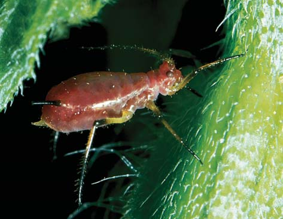
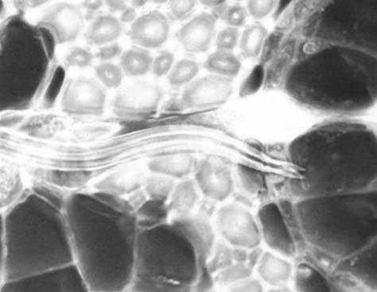
Estructura y transporte en el tallo 759
Aprenda más acerca del modelo tensión-cohesión al hacer clic sobre la fi gura en CengageNOW.
■ La presión radical , causada por el movimiento de agua hacia las raíces desde el suelo como resultado de la absorción activa de iones minerales desde el suelo, ayuda a explicar el ascenso del agua en las plantas más pequeñas, particularmente cuando el suelo está húmedo. La presión radical empuja agua hacia arriba a través del xilema.
35.3 ( página 756 )
7 Describir la ruta de translocación de azúcar en las plantas.
■ El azúcar disuelto se transloca hacia arriba o hacia abajo en el fl oema, desde una fuente (un área de exceso de azúcar, por lo general una hoja) hasta un depósito (un área de almacenamiento o de uso de azúcar, como raíces, meristemas apicales, frutos y semillas). La sacarosa es el azúcar predominante translocado en el fl oema. 8 Discutir el modelo presión-fl ujo de translocación de azúcar en fl oema.
■ El movimiento de materiales en el fl oema se explica mediante el modelo presión-fl ujo . Las células oclusivas cargan azúcar de manera activa hacia los tubos cribosos en la fuente; se requiere ATP para este proceso. El ATP suministra energía para bombear protones fuera de los elementos de tubo criboso. El gradiente de protones impulsa la toma de azúcar mediante el cotransporte de protones de vuelta hacia los elementos de tubo criboso. Por lo tanto el azúcar se acumula en el elemento de tubo criboso, lo que produce el movimiento de agua hacia los tubos cribosos por ósmosis .
■ Las células acompañantes descargan azúcar activa (lo que requiere ATP) y pasivamente (no requiere ATP) desde los tubos cribosos hacia el depósito. Como resultado, el agua sale de los tubos cribosos por ósmosis, lo que reduce la presión de turgencia (presión hidrostática) dentro de los tubos cribosos.
■ El fl ujo de materiales entre fuente y depósito se impulsa mediante el gradiente de presión de turgencia producido por el agua que entra al fl oema en la fuente y el agua que sale del fl oema en el depósito.
Aprenda más acerca de cómo viaja el azúcar al hacer clic sobre la fi gura en CengageNOW.
Aprenda más acerca del crecimiento secundario al hacer clic sobre las fi guras en CengageNOW.
35.2 (página 753)
4 Describir la ruta de movimiento de agua en las plantas.
■ Agua y minerales disueltos se mueven desde el suelo hacia tejidos de la raíz (epidermis, córtex, etcétera). Una vez en el xilema radicular, el agua y los minerales se mueven hacia arriba, desde el xilema radical hacia el xilema de tallo hasta el xilema foliar. Mucha del agua que entra a la hoja sale por las venas foliares y pasa hacia la atmósfera. 5 Defi nir potencial hídrico .
■ El potencial hídrico ( C w ) es una medida de la energía libre del agua. El agua pura tiene un potencial hídrico de 0 megapascales (MPa), mientras que el agua con solutos disueltos tiene un potencial hídrico negativo. El agua se mueve desde un área de mayor (menos negativo) potencial hídrico hacia un área de menor (más negativo) potencial hídrico.
6 Explicar los papeles de tensión-cohesión y de presión radical como mecanismos responsables para el ascenso de agua y minerales disueltos en el xilema.
■ El modelo tensión-cohesión explica el ascenso del agua incluso en las plantas más altas. El tirón evaporador de la transpiración causa tensión en la parte superior de la planta. Esta tensión es el resultado de un gradiente de potencial hídrico que varía desde potenciales hídricos ligeramente negativos en el suelo y raíces, hasta los potenciales hídricos muy negativos de la atmósfera. Como resultado de las propiedades cohesiva y adhesiva del agua, la columna de agua jalada a través de la planta permanece ininterrumpida.
Las yemas axilares se ubican (a) en las puntas de los tallos (b) en lugares inusuales, como en las raíces (c) en la región entre dos nodos sucesivos (d) en el ángulo superior entre una hoja y el tallo al que está unida (e) dentro de las células holgadamente distribuidas de las lenticelas
El tejido fundamental en los tallos monocotiledóneos realiza la misma función que _____________ y __________ en los tallos eudicotiledóneos herbáceos. (a) fl oema; xilema (b) cámbium de corcho; cámbium vascular (c) epidermis; peridermis (d) xilema primario; xilema secundario (e) córtex; médula
¿Cuál de los siguientes enunciados es falso ? (a) el crecimiento primario es un aumento en la longitud de una planta (b) el crecimiento primario ocurre tanto en meristemas apicales como en laterales (c) todas las plantas tienen crecimiento primario (d) los tallos herbáceos tienen crecimiento primario, mientras que los tallos leñosos tienen crecimientos primario y secundario (e) las yemas son brotes embrionarios que contienen meristemas apicales
Los dos meristemas laterales responsables del crecimiento secundario son (a) fl oema y xilema (b) cámbium de corcho y cámbium vascular (c) epidermis y peridermis (d) xilema primario y xilema secundario (e) córtex y médula
El cámbium de corcho y los tejidos que produce se llaman colectivamente (a) peridermis (b) lenticelas (c) córtex (d) epidermis (e) madera
Cada anillo anual en una sección de madera representa el crecimiento de un año de (a) xilema primario (b) xilema secundario (c) xilema primario o xilema secundario en años alternados (d) fl oema primario (e) fl oema secundario
El potencial hídrico es (a) la formación de un gradiente de protones a través de una membrana celular (b) el transporte de una solución acuosa de azúcar en el fl oema (c) el transporte de agua tanto en xilema como en fl oema (d) la remoción de sacarosa en el depósito, lo que hace que el agua se mueva afuera de los tubos cribosos (e) la energía libre del agua en una situación particular
¿Cuál de los siguientes es un mecanismo de movimiento de agua en el xilema que es responsable de la gutación? (a) presión-fl ujo (b) tensión-cohesión (c) presión radical (d) transporte activo de iones potasio en células acompañantes (e) transpiración
¿Cuál de los siguientes es un mecanismo de movimiento de agua en el xilema que combina el tirón evaporador de la transpiración con las propiedades cohesiva y adhesiva del agua? (a) presión-fl ujo
EVALÚE SU COMPRENSIÓN
760 Capítulo 35
hídrico se vuelve más negativo (c) el potencial hídrico se vuelve más positivo bajo ciertas condiciones y más negativo bajo otras condiciones (d) el potencial hídrico no es afectado por la concentración de soluto (e) el potencial hídrico siempre es cero cuando los solutos se disuelven en agua
- Etiquete los diversos tejidos, proporcione al menos una función para cada tejido e identifi que el tallo como una eudicotiledónea herbácea, monocotiledónea o planta leñosa. Use la fi gura 35-1 para comprobar sus respuestas.
- tensión-cohesión (c) presión radical (d) transporte activo de iones potasio en las células acompañantes (e) gutación
¿Cuál de los siguientes es un mecanismo de transporte en fl oema en el que azúcar disuelto se mueve mediante un gradiente de presión que existe entre la fuente y el depósito? (a) presión-fl ujo (b) tensióncohesión (c) presión radical (d) transporte activo de iones potasio en las células acompañantes (e) gutación
¿Cómo el aumento de concentración de soluto afecta el potencial hídrico? (a) el potencial hídrico se vuelve más positivo (b) el potencial
Ed Reschke/Peter Arnold, Inc.
Cuando inicia el crecimiento secundario, ciertas células se vuelven meristemáticas y comienzan a dividirse. ¿Una traqueida madura alguna vez podría hacer esto? ¿Un elemento de tubo criboso? ¿Por qué sí o por qué no?
¿Por qué la madera de muchos árboles tropicales carece de anillos anuales? ¿Por qué la madera de otros árboles tropicales posee anillos anuales?
¿Por qué la madura dura es más deseable que la madera blanda para fabricar muebles? Explique su respuesta, con base en las diferencias estructurales entre madera dura y madera blanda.
¿Por qué debe cortar algunos centímetros de los extremos del tallo de las fl ores cortadas antes de colocarlas en agua? Base su respuesta sobre lo que aprendió acerca del modelo tensión-cohesión.
Cuando una tira de corteza se desprende de la rama de un árbol, ¿qué tejidos se remueven generalmente?
¿Un árbol podría crecer hasta una altura de 150 m? ¿Por qué sí o por qué no?
VÍNCULO CON LA EVOLUCIÓN. Como los tallos en general, algunas enredaderas son herbáceas y otras son leñosas. Las pluviselvas tienen mayor diversidad de enredaderas que cualquier otro ambiente sobre la Tierra, y la mayoría de estas enredaderas son leñosas. Desarrolle una hipótesis para explicar por qué la selección natural favoreció la evolución de más especies de enredaderas leñosas (en oposición a las enredaderas herbáceas) en las pluviselvas.
ANÁLISIS DE DATOS. Una célula vegetal con un potencial hídrico C w = − 1.5 MPa está adyacente a una segunda célula con C w = − 1.8 MPa. ¿El agua fl uirá por ósmosis de una célula a otra? Si es así, ¿en cuál dirección?
Preguntas adicionales están disponibles en CengageNOW en www.cengage.com/login.
PENSAMIENTO CRÍTICO
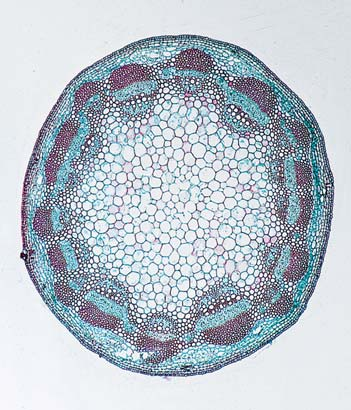